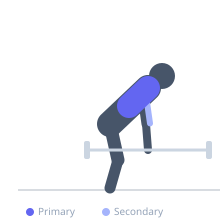
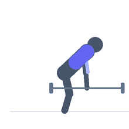

Exercise guide / Corner T-Bar Row
Corner T-Bar Row
The corner T-bar row wedges one end of a standard barbell into a corner of a room rather than using a landmine unit, creating an improvised pivot point. The lifter straddles the bar and rows the loaded end with both hands using a V-handle or towel grip. It is functionally identical to a landmine T-bar row and allows heavy bilateral back training without specialized equipment.
Primary muscles
latissimus dorsi
rhomboid major
Secondary muscles
biceps brachii
trapezius middle
Stabilizers
erector spinae
Equipment
No Equipment (Bodyweight)


Starting position
- Wedge the collar end of a barbell into a padded corner (use a folded mat to protect the wall). Load weight on the other end. Stand straddling the bar, hinge at the hips to 45 degrees, grasp the bar end with both hands or a V-handle.
Setup
- Pad the corner generously to prevent wall damage. Keep feet hip to shoulder width apart, straddling the bar. A towel looped around the bar makes a bilateral grip possible without a handle attachment.
Steps
- Step 1: Hinge at the hips and grip the bar end.
- Step 2: Depress and retract the shoulder blades.
- Step 3: Row the bar end toward the sternum by driving elbows back.
- Step 4: Squeeze at the top for 1 second.
- Step 5: Lower under control to arm extension.
Coaching cues
- Drive the elbows high and back
- Keep the bar path tight to the body
- Maintain flat back throughout
Breathing
- Exhale on the row. Inhale on the descent.
Range of motion
- Full arm extension to elbows behind torso.
Tempo
- 2-1-2-0
Common mistakes
- Rounding the lower back under heavy loads — brace harder
- Letting the bar slip in the corner — ensure adequate padding and angle
Safety
- The corner must be solid and padded — a slipping bar can be dangerous
- Keep a collar on the loaded end to prevent plates sliding off
Training
- hypertrophy: 8–15 reps
- strength: 5–8 reps
- hypertrophy: 3–4 sets
- Rest: {'hypertrophy': 90, 'strength': 120}